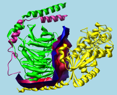

|
G protein heterotrimer (1gg2)
alpha-beta interface surface |
|---|
|  |
Intersurf generates and displays interface surfaces. See also: FindHBond, Find Clashes/Contacts, measure buriedarea
The Intersurf tool in Chimera is an implementation of the method described in:
Intersurf: dynamic interface between proteins. Ray N, Cavin X, Paul JC, Maigret B. J Mol Graph Model. 2005 Jan;23(4):347-54.In this context, an interface surface is not the surface of either set of atoms, but a surface that divides the space between them. The division of space is based on Delaunay tetrahedralization.
There are several ways to start Intersurf, a tool in the Surface/Binding Analysis category. Intersurf is also implemented as the command intersurf.
The first step is to specify two sets of atoms, which can be different Molecules (molecule models) or different Chains within the same or different models. (To specify sets of atoms that are not whole models or whole chains, it is necessary to use the command intersurf instead, with atom pairing.) Two entries should be chosen from the list of Molecules or Chains by clicking one and Ctrl-clicking the other, or by dragging if the two entries are adjacent.
Options:
OK generates the interface surface and dismisses the dialog, whereas Apply generates the surface without dismissing the dialog. Close dismisses the Intersurf dialog, and Help opens this manual page in a browser window.
An interface surface is a separate model that can be:
The histogram with sliders (thresholds) allows the surface to be colored by the distance between atoms across the interface. Interface surfaces can also be colored according to volume data (with Surface Color) and to match atoms (with Color Zone).
Clicking on a threshold shows its distance Value in black. Clicking elsewhere within the histogram shows the Value (X-coordinate) of the mouseclick in gray. A threshold can be moved by changing its Value and then pressing Enter (return) or by dragging it horizontally with the left mouse button. Holding the Shift key down reduces the speed (mouse sensitivity) of threshold dragging tenfold, allowing finer control. Thresholds can be added by Ctrl-clicking with the left mouse button on the histogram. Ctrl-clicking on an existing threshold deletes it. Besides a Value (position on the histogram), each threshold has a Color. The Color applies to the threshold most recently moved or clicked and can be adjusted by clicking the adjacent color well.
The thresholds define a function that maps distances to colors. For each surface point, the corresponding atom-atom distance is compared to the thresholds on the histogram. Color is defined by red, green, blue and opacity/transparency components. The color of the closest threshold at a lower value (to the left) and the color of the closest threshold at a higher value (to the right) are linearly interpolated. Points with distance values less than the leftmost threshold are colored according to the leftmost threshold, while points with distance values greater than the rightmost threshold are colored according to the rightmost threshold.
See also: Color Zone, Surface Color